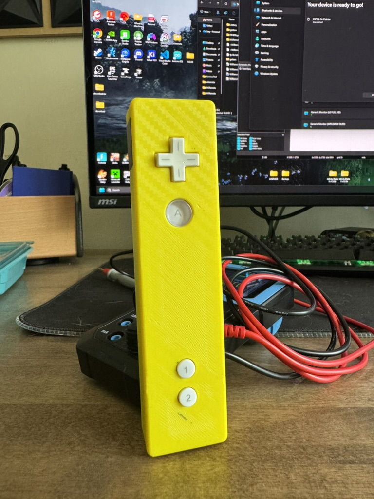
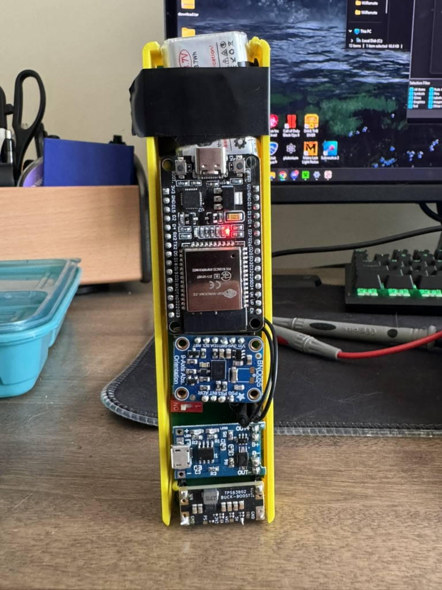
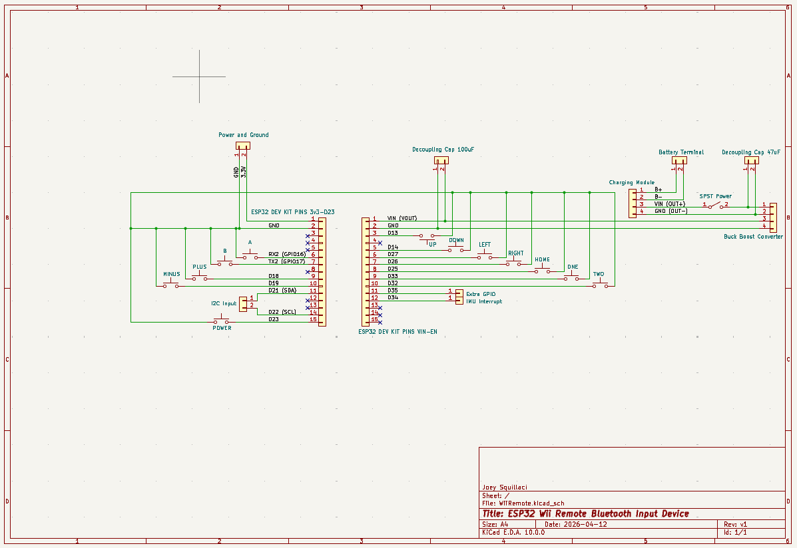
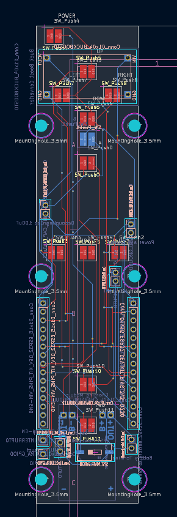
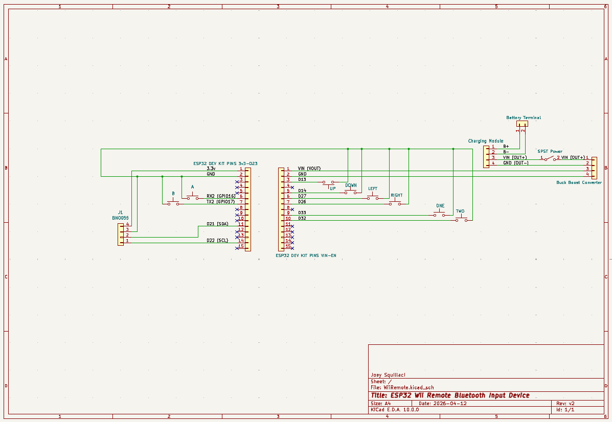
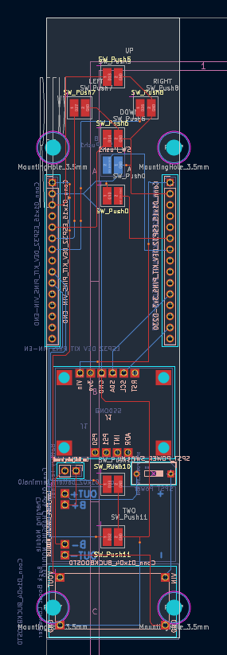

Embedded Systems | Personal Project
Bluetooth Wii Remote
This project builds a Wii Remote–style air pointer around a handheld electronics stack: an ESP32 DevKit C, an Adafruit BNO055 9-axis IMU, a 3.7 V lithium-ion battery, a TP4056 Micro USB charging module, and a TPS63802 buck-boost converter. The controller tracks orientation in space and presents itself to a host computer as a Bluetooth HID mouse, mapping yaw and pitch to cursor position so the user can aim at the screen by physically pointing the device.
The work evolved across two hardware generations. Version 1 used a custom PCB to route directional button input, battery charging, and regulated power through the handheld layout. Version 2 extended that foundation with the BNO055 module to read absolute orientation and mimic Wii Remote pointing behavior, with directional buttons providing fine manual panning when needed.
Physical Electronics
The controller is built as a compact embedded product rather than a breadboard prototype. Power enters through a TP4056 Micro USB charging module, which manages charging for a 3.7 V lithium-ion battery. A TPS63802 buck-boost converter then regulates that battery voltage so the ESP32 DevKit C and Adafruit BNO055 IMU receive stable supply rails inside the handheld enclosure.
The ESP32 DevKit C handles Bluetooth pairing, HID mouse reporting, button reads, and the orientation-to-cursor control loop. The BNO055 provides fused absolute orientation over I²C on GPIO21 and GPIO22, which is what enables Wii Remote–style pointing instead of relying only on raw accelerometer tilt.
Electronics Architecture
- TP4056 charging module: Micro USB input and Li-ion charge management
- 3.7 V lithium-ion battery: Portable power source for untethered use
- TPS63802 buck-boost module: Regulated conversion across battery voltage swing
- ESP32 DevKit C: Main MCU, BLE stack, and HID mouse interface
- Adafruit BNO055: 9-axis IMU with onboard sensor fusion at address 0x28
- Directional buttons: GPIO13, GPIO14, GPIO26, and GPIO27 for manual panning
Project Overview
The ESP32 Air Pointer treats controller orientation as an absolute screen position. Orientation is read from the BNO055, converted into a target cursor location, and the BLE mouse continuously moves toward that target. This produces Wii Remote–style pointing rather than relative joystick-style motion.
Because the ESP32 cannot read the host's actual cursor position, the firmware maintains an internal virtual cursor estimate and compensates for OS mouse acceleration with tuned follow gain and movement scaling.
Signal Processing
- Deadzone filtering on yaw and pitch to reduce jitter
- Low-pass smoothing for steadier cursor movement
- Automatic rejection of large orientation discontinuities
- Button panning offsets for fine adjustment without re-aiming
- Serial recenter command to reset references and return to screen center
Build & Demo
Physical build photos and air pointer demonstration.
Hardware photos from the controller assembly alongside a screen-recording demo of the ESP32 Air Pointer controlling cursor position through orientation.


KiCAD design
PCB evolution from custom button input to BNO055 orientation tracking.
Version 1 captured the physical electronics stack in KiCAD: TP4056 charging, 3.7 V battery input, TPS63802 regulation, ESP32 DevKit C interconnect, and directional button routing. Version 2 extended that board design to integrate the Adafruit BNO055 for orientation-driven pointing.
Version 1 — Custom Button Input PCB
The first revision captured the full physical electronics stack in a custom PCB: TP4056 charging, 3.7 V battery input, TPS63802 buck-boost regulation, ESP32 DevKit C interconnect, and routed directional button lines for the handheld controller layout.
Schematic

PCB Layout

Version 2 — BNO055 Orientation Module
The second revision kept the same charging and power architecture while integrating the Adafruit BNO055 over I²C on GPIO21/22. That addition let the firmware read fused orientation and map yaw and pitch directly to screen position for Wii Remote–style pointing.
Schematic

PCB Layout

Cursor Mapping
Horizontal motion uses a 60° yaw edge mapping, while vertical motion uses a more sensitive 33° pitch edge mapping. The firmware converts smoothed relative yaw and pitch into a target screen coordinate, then drives the BLE mouse toward that target using follow gain, max move step, and virtual movement scaling tuned on a 3440×1440 ultrawide display running macOS.
Known Limitations
- Virtual cursor tracking can drift because the host cursor position is not readable
- OS mouse acceleration affects long-term pointing accuracy
- BNO055 yaw occasionally produces sudden discontinuities despite filtering
- Periodic recentering via serial command may be required during extended use
Firmware
ESP32 air pointer control loop in `wiiRemoteMotionV1.ino`.
The firmware initializes the BNO055, configures directional buttons with internal pull-ups, starts BLE HID mouse advertising, and runs a 5 ms update loop that maps orientation to absolute cursor targets.
assets/wiiRemoteMotionV1.ino
Open raw file
#include <Wire.h>
#include <Adafruit_Sensor.h>
#include <Adafruit_BNO055.h>
#include <utility/imumaths.h>
#include <HijelHID_BLEMouse.h>
#include <math.h>
Adafruit_BNO055 bno = Adafruit_BNO055(55, 0x28);
HijelBLEMouse mouse("ESP32 Air Pointer", "Joey", 100);
// ===== USER CONFIG =====
const int SCREEN_WIDTH = 3440;
const int SCREEN_HEIGHT = 1440;
// ===== BUTTON INPUTS =====
const int BUTTON_UP_PIN = 13;
const int BUTTON_DOWN_PIN = 14;
const int BUTTON_LEFT_PIN = 27;
const int BUTTON_RIGHT_PIN = 26;
// Higher = faster button panning
const float buttonPanStep = 4.0f;
float buttonOffsetX = 0.0f;
float buttonOffsetY = 0.0f;
// ===== ORIENTATION OFFSETS =====
float offsetYaw = 0.0f;
float offsetPitch = 0.0f;
float offsetRoll = 0.0f;
// ===== VIRTUAL CURSOR POSITION =====
// This represents where the code believes the cursor is,
// relative to screen center.
float virtualX = 0.0f;
float virtualY = 0.0f;
// ===== SCREEN MAPPING =====
// How many degrees of controller motion map to the screen edge.
const float yawEdgeDeg = 60.0f;
const float pitchEdgeDeg = 33.0f;
// Center calibration for macOS / display scaling.
const float CENTER_X_SCALE = 1.35f;
const float CENTER_Y_SCALE = 1.35f;
// ===== FILTERING =====
const float yawDeadzoneDeg = 0.4f;
const float pitchDeadzoneDeg = 0.4f;
const float maxYawJumpDeg = 35.0f;
const float maxPitchJumpDeg = 35.0f;
float lastValidYaw = 0.0f;
float lastValidPitch = 0.0f;
float smoothYaw = 0.0f;
float smoothPitch = 0.0f;
// Lower = smoother but slower. Higher = faster but shakier.
const float angleSmoothing = 0.18f;
// ===== CURSOR BEHAVIOR =====
// How aggressively cursor moves toward desired absolute position.
const float followGain = 0.11f;
// Maximum mouse counts sent per update.
const int maxMoveStep = 18;
// If error is smaller than this, stop moving.
const float stopThreshold = 1.5f;
// Compensation for OS mouse scaling / acceleration.
// Tune this if virtual cursor and real cursor slowly separate.
const float virtualMovementScale = 0.45f;
// ===== TIMING =====
const unsigned long updateMs = 5;
unsigned long lastUpdate = 0;
unsigned long lastPrint = 0;
// ===== HELPERS =====
float wrapAngle180(float deg) {
while (deg > 180.0f) deg -= 360.0f;
while (deg < -180.0f) deg += 360.0f;
return deg;
}
float clampFloat(float value, float minVal, float maxVal) {
if (value < minVal) return minVal;
if (value > maxVal) return maxVal;
return value;
}
int clampInt(int value, int minVal, int maxVal) {
if (value < minVal) return minVal;
if (value > maxVal) return maxVal;
return value;
}
float applyDeadzone(float value, float deadzone) {
if (fabs(value) < deadzone) return 0.0f;
return value;
}
float lowPass(float previous, float current, float alpha) {
return previous + alpha * (current - previous);
}
float filterYaw(float newYaw) {
if (isnan(newYaw) || isinf(newYaw)) {
return lastValidYaw;
}
float yawDelta = wrapAngle180(newYaw - lastValidYaw);
if (fabs(yawDelta) > maxYawJumpDeg) {
offsetYaw = wrapAngle180(offsetYaw + yawDelta);
return lastValidYaw;
}
lastValidYaw = newYaw;
return newYaw;
}
float filterPitch(float newPitch) {
if (isnan(newPitch) || isinf(newPitch)) {
return lastValidPitch;
}
float pitchDelta = newPitch - lastValidPitch;
if (fabs(pitchDelta) > maxPitchJumpDeg) {
offsetPitch = wrapAngle180(offsetPitch + pitchDelta);
return lastValidPitch;
}
lastValidPitch = newPitch;
return newPitch;
}
void moveMouseCounts(int totalDx, int totalDy) {
while (totalDx != 0 || totalDy != 0) {
int stepX = 0;
int stepY = 0;
if (totalDx > 0) stepX = min(totalDx, 100);
if (totalDx < 0) stepX = max(totalDx, -100);
if (totalDy > 0) stepY = min(totalDy, 100);
if (totalDy < 0) stepY = max(totalDy, -100);
mouse.move(stepX, stepY);
totalDx -= stepX;
totalDy -= stepY;
delay(3);
}
}
// ===== HARD CURSOR CENTERING =====
void moveCursorToCenter() {
if (!mouse.isPaired()) {
Serial.println("Mouse not paired. Cursor was not centered.");
return;
}
Serial.println("Centering cursor...");
moveMouseCounts(-12000, -12000);
delay(150);
int centerXCounts = (int)lround((SCREEN_WIDTH / 2.0f) * CENTER_X_SCALE);
int centerYCounts = (int)lround((SCREEN_HEIGHT / 2.0f) * CENTER_Y_SCALE);
moveMouseCounts(centerXCounts, centerYCounts);
delay(150);
virtualX = 0.0f;
virtualY = 0.0f;
Serial.println("Cursor centered.");
}
// ===== RECENTER =====
void recenterFromCurrent() {
sensors_event_t event;
bno.getEvent(&event);
offsetYaw = event.orientation.x;
// Swapped pitch/roll mapping from your current setup.
offsetRoll = event.orientation.y;
offsetPitch = event.orientation.z;
lastValidYaw = 0.0f;
lastValidPitch = 0.0f;
smoothYaw = 0.0f;
smoothPitch = 0.0f;
virtualX = 0.0f;
virtualY = 0.0f;
buttonOffsetX = 0.0f;
buttonOffsetY = 0.0f;
moveCursorToCenter();
lastUpdate = millis();
Serial.println("Recenter complete.");
}
// ===== SETUP =====
void setup() {
Serial.begin(115200);
delay(1000);
Serial.println("BNO055 Absolute Pointer Starting...");
pinMode(BUTTON_UP_PIN, INPUT_PULLUP);
pinMode(BUTTON_DOWN_PIN, INPUT_PULLUP);
pinMode(BUTTON_LEFT_PIN, INPUT_PULLUP);
pinMode(BUTTON_RIGHT_PIN, INPUT_PULLUP);
Wire.begin(21, 22);
Wire.setClock(400000);
if (!bno.begin()) {
Serial.println("BNO055 NOT detected.");
while (1) {
delay(100);
}
}
bno.setExtCrystalUse(true);
mouse.begin();
delay(300);
recenterFromCurrent();
Serial.println("Ready. Press 'c' to recenter.");
}
// ===== LOOP =====
void loop() {
while (Serial.available()) {
char input = Serial.read();
if (input == 'c' || input == 'C') {
recenterFromCurrent();
}
}
if (millis() - lastUpdate < updateMs) {
return;
}
lastUpdate = millis();
sensors_event_t event;
bno.getEvent(&event);
float yaw = event.orientation.x;
// Swapped pitch/roll mapping from your current setup.
float roll = event.orientation.y;
float pitch = event.orientation.z;
float rawRelYaw = wrapAngle180(yaw - offsetYaw);
float rawRelPitch = wrapAngle180(pitch - offsetPitch);
float relRoll = wrapAngle180(roll - offsetRoll);
float relYaw = filterYaw(rawRelYaw);
float relPitch = filterPitch(rawRelPitch);
relYaw = applyDeadzone(relYaw, yawDeadzoneDeg);
relPitch = applyDeadzone(relPitch, pitchDeadzoneDeg);
smoothYaw = lowPass(smoothYaw, relYaw, angleSmoothing);
smoothPitch = lowPass(smoothPitch, relPitch, angleSmoothing);
// Convert controller angle directly to desired screen position.
// This is the Wii-style behavior: point angle maps to screen location.
float halfScreenX = SCREEN_WIDTH / 2.0f;
float halfScreenY = SCREEN_HEIGHT / 2.0f;
// ===== BUTTON-BASED TARGET POSITION OFFSET =====
// Buttons are active LOW because INPUT_PULLUP is used.
// Holding a button continuously shifts the target position.
if (digitalRead(BUTTON_UP_PIN) == LOW) {
buttonOffsetY -= buttonPanStep;
}
if (digitalRead(BUTTON_DOWN_PIN) == LOW) {
buttonOffsetY += buttonPanStep;
}
if (digitalRead(BUTTON_LEFT_PIN) == LOW) {
buttonOffsetX -= buttonPanStep;
}
if (digitalRead(BUTTON_RIGHT_PIN) == LOW) {
buttonOffsetX += buttonPanStep;
}
// No clamp here: button offsets are allowed to keep moving beyond
// the internal screen bounds so the cursor will not hit an artificial wall.
float targetX = ((smoothYaw / yawEdgeDeg) * halfScreenX) + buttonOffsetX;
float targetY = (-(smoothPitch / pitchEdgeDeg) * halfScreenY) + buttonOffsetY;
// No target clamp here: removing the artificial internal screen boundary.
// The actual operating system cursor edge will be the only real boundary.
float errorX = targetX - virtualX;
float errorY = targetY - virtualY;
int dx = 0;
int dy = 0;
if (fabs(errorX) > stopThreshold) {
dx = clampInt((int)lround(errorX * followGain), -maxMoveStep, maxMoveStep);
}
if (fabs(errorY) > stopThreshold) {
dy = clampInt((int)lround(errorY * followGain), -maxMoveStep, maxMoveStep);
}
if (mouse.isPaired() && (dx != 0 || dy != 0)) {
mouse.move(dx, dy);
virtualX += dx * virtualMovementScale;
virtualY += dy * virtualMovementScale;
// No virtualX/virtualY clamp here: removing the artificial internal screen boundary.
}
if (millis() - lastPrint > 150) {
lastPrint = millis();
Serial.print("RawYaw:");
Serial.print(rawRelYaw, 1);
Serial.print(" Yaw:");
Serial.print(relYaw, 1);
Serial.print(" SmoothYaw:");
Serial.print(smoothYaw, 1);
Serial.print(" RawPitch:");
Serial.print(rawRelPitch, 1);
Serial.print(" Pitch:");
Serial.print(relPitch, 1);
Serial.print(" SmoothPitch:");
Serial.print(smoothPitch, 1);
Serial.print(" Roll:");
Serial.print(relRoll, 1);
Serial.print(" | ButtonOffsetX:");
Serial.print(buttonOffsetX, 0);
Serial.print(" ButtonOffsetY:");
Serial.print(buttonOffsetY, 0);
Serial.print(" | TargetX:");
Serial.print(targetX, 0);
Serial.print(" VirtualX:");
Serial.print(virtualX, 0);
Serial.print(" | TargetY:");
Serial.print(targetY, 0);
Serial.print(" VirtualY:");
Serial.print(virtualY, 0);
Serial.print(" | dx:");
Serial.print(dx);
Serial.print(" dy:");
Serial.println(dy);
}
}3D model views
Interactive STL previews of the V1 and V2 enclosure designs.
Version 1 used the first enclosure iteration. Version 2 matured through later revisions, with V8 representing the enclosure paired with the BNO055-based build.
Version 1 Enclosure
Loading `WiiRemoteEnclosureV1.stl`...
Version 2 Enclosure (V8)
Loading `WiiRemoteEnclosurev8.stl`...